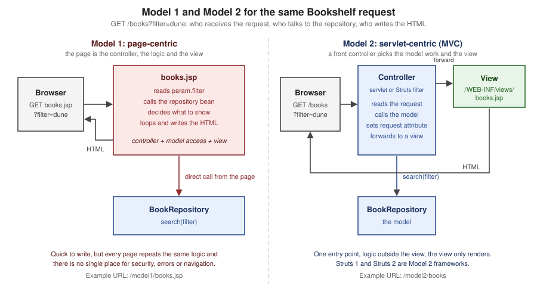

MVC with Servlets & JSP
|
This content was generated with the assistance of AI and should be verified against the official documentation before being relied on in production. |
This page is written against Jakarta Servlet 6.1, Jakarta Pages 4.0, Jakarta Expression Language 6.0 and Jakarta Standard
Tag Library 3.0 (Jakarta EE 11), as implemented by Apache Tomcat 11.0.26, on Java 21. Everything was verified on
2026-10-08: the facts against the specifications, the Javadoc and the Tomcat documentation, and every example by building
it into a Maven WAR (context path /g7mvc) and running it on Tomcat 11.0.26 with curl; the outputs shown are the
outputs of that run. A JSP can do everything a servlet can, so the first question of any Java web project is where the
code goes: into the pages, or into classes that the pages only display. This page answers it. It compares the two
classic architectures (Model 1 and Model 2), then builds the Model 2 version of the Bookshelf catalogue: one front
controller servlet, commands, request attributes as the model, views under WEB-INF, Post/Redirect/Get with a flash
message, a form token, a service layer over JDBC and a JNDI DataSource, and a second representation of the same data.
It closes with the same architecture in Spring MVC and Struts, which are this pattern with the plumbing written for you.
The servlet vocabulary (dispatchers, scopes, filters, error pages) comes from the
servlet fundamentals page, and the building blocks of the views from the
expression language, core tag library and
tag files and layouts pages of this section.
What MVC Means on the Servlet Platform
Model-View-Controller splits a web application along three responsibilities: the model holds the data and the rules of the application, the view renders it, and the controller turns an HTTP request into calls on the model and picks the view. On the servlet platform the three roles map onto concrete things, and the rest of this page is about keeping each role in its own place.
| Role | Implemented by | In the Bookshelf |
|---|---|---|
Controller |
A servlet (or a servlet filter), plus small command classes it delegates to |
|
Model: request data |
Request attributes, and session attributes for what must survive a redirect |
|
Model: business logic and data |
Plain Java classes with no servlet types: services and repositories |
|
View |
A JSP page with EL and JSTL, composed with tag files, stored under |
|
The word "model" is used for two different things, which is a common source of confusion in the literature. In the narrow sense used by view technologies, the model is the data the controller hands to the view for one request (in the servlet API: request attributes). In the wider sense used by architecture books, the model is the whole business tier. This page keeps both, and says which one it means.
Model 1: The Page Does Everything
In a Model 1 (page-centric) application the browser requests a JSP directly, and that JSP receives the request, reads the parameters, calls the data layer, makes the decisions and writes the HTML. It is the architecture of the first JSP tutorials, and for a one-page tool it is still the shortest path. The Bookshelf catalogue as a Model 1 page is a single file that fetches the service from the application scope and loops over the result with a scriptlet.
<%@ page contentType="text/html;charset=UTF-8" import="java.util.*, org.example.bookshelf.model.*, org.example.bookshelf.service.*" %>
<%
BookService books = (BookService) application.getAttribute("bookService");
String q = request.getParameter("q") == null ? "" : request.getParameter("q");
Page<Book> result = books.search(q, request.getParameter("sort"), 1);
%>
<html><body>
<h1>Catalogue (Model 1)</h1>
<ul>
<% for (Book b : result.items()) { %>
<li><%= b.title() %> by <%= b.author() %></li>
<% } %>
</ul>
</body></html>Requesting /g7mvc/model1/books.jsp returned the first page of the catalogue, five <li> items sorted by title (the
output of the loop above is <li>Dune by Frank Herbert</li> and so on). It works, and everything the architecture
literature says about it is visible in the file: the page imports the model packages, knows how to read parameters,
knows the paging convention (1 is hard-coded) and mixes Java statements with markup, so changing the catalogue means
editing a page that a designer also edits. Page-centric designs come in a few recurring shapes, and all of them have the
same limit.
| Shape | How it works | Limit |
|---|---|---|
Role-based pages |
One page per role or use case, each with its own logic ( |
The same query and the same rules are copied from page to page |
Action target |
A form posts to a JSP that processes the request and redirects (see the next listing) |
The page has no HTML of its own, only logic; it is a servlet written in the wrong file type |
Composite page |
A page assembles others with |
No central place to authenticate, log or choose the next page; every fragment repeats its own checks |
Beans on the page |
|
Better than raw scriptlets, still no separation between request handling and display |
The action-target shape is the one that shows the limit most clearly. This page binds the form fields to a bean with
jsp:setProperty property="*", calls the service and redirects, and it renders HTML only when the request is not a POST.
<%@ page contentType="text/html;charset=UTF-8" import="org.example.bookshelf.service.BookService" %>
<% request.setCharacterEncoding("UTF-8"); %>
<jsp:useBean id="form" class="org.example.bookshelf.web.BookForm" scope="request"/>
<jsp:setProperty name="form" property="*"/>
<%
if ("POST".equals(request.getMethod())) {
BookService books = (BookService) application.getAttribute("bookService");
books.create(form.getTitle(), form.getAuthor(), form.getYear());
response.sendRedirect(request.getContextPath() + "/model1/books.jsp");
return;
}
%>
<html><body>
<form method="post" action="add.jsp">
<input name="title"> <input name="author"> <input name="year"> <button>Save</button>
</form>
</body></html>public class BookForm {
private String title = "";
private String author = "";
private int year;
public String getTitle() { return title; }
public void setTitle(String title) { this.title = title; }
public String getAuthor() { return author; }
public void setAuthor(String author) { this.author = author; }
public int getYear() { return year; }
public void setYear(int year) { this.year = year; }
}A GET of /g7mvc/model1/add.jsp returned the form, and a POST of title=Model1 Book&author=Z&year=1999 returned
302 with Location: /g7mvc/model1/books.jsp and created the book. The page also shows two traps of the style. The
return; after sendRedirect must stop the generated _jspService method, and it must be the last statement of its
block: a first version that closed the if in a second scriptlet, so that template text came after the return;, failed
to compile with Unreachable code at the line of the scriptlet (observed; the same error appeared when the return; was
placed inside a c:if body). And property="*" binds every request parameter that matches a property of the bean, so
adding a property to the bean later silently makes a new parameter writable by anyone.
Source: Jakarta Pages 4.0 — jsp:useBean
Model 1 is not wrong for everything. A status page, an internal report or a prototype with one reader needs no controller. It stops being a good fit when a second page needs the same logic, when the next page depends on the outcome of the request, or when something must run for every request (authentication, encoding, a CSRF check). Those are exactly the three jobs a controller is for.
Model 2: A Servlet Controls, a JSP Displays
In Model 2 (servlet-centric) the browser never requests a JSP. It requests a servlet; the servlet handles the request,
asks the model for data, stores the results as request attributes and forwards to a JSP that renders them. The
servlet decides; the JSP only displays. The diagram shows the request that the finished Bookshelf handles for
GET /g7mvc/app/books?sort=year.

| Step | What happens |
|---|---|
1-2 |
The container maps the URL to the servlet with the longest matching prefix ( |
3 |
The controller picks the command from the HTTP method and the path info, and prepares the parts every view needs (the base URL, the form token, the one-shot flash message) |
4-6 |
The command calls the service, which calls the repository; the controller never touches JDBC, the repository never touches the request |
7-8 |
The result is stored with |
9 |
|
10 |
The JSP is compiled once and then run as a servlet; EL reads the attributes, JSTL loops and escapes, and the HTML goes out |
Source: The Java EE 5 Tutorial — Transferring Control to Another Web Component (archived, javax era)
Three properties make Model 2 worth the extra classes. The URL space belongs to the controller, so /app/books/12 can
stay stable while the JSP behind it is renamed. Every cross-cutting concern has one place to live (the controller or a
filter in front of it). And the view can be tested by giving it a model, without a database and without a browser.
Choosing an Architecture
The decision is not "Model 1 or Model 2" for a new project; it is how much of Model 2 you write yourself.
| Architecture | Choose it when | Cost |
|---|---|---|
Model 1, JSP pages with beans |
A single internal page, a prototype, a learning exercise |
Logic in views; does not scale to many pages or teams |
Hand-written Model 2 (this page) |
A small application, a learning goal, or a library that must not depend on a framework; a handful of routes |
You write routing, binding, validation and the error mapping that frameworks give you |
Spring MVC with JSP views |
A Spring application that keeps JSPs; see the comparison below |
JSP in an executable Spring Boot jar is not supported (the Boot reference says so); a WAR is needed |
Struts 2 with JSP views |
An existing Struts application, or a team that wants action-based MVC with interceptors; the Struts part of this section |
A framework with its own expression language (OGNL) and a security history to follow |
A template engine such as Thymeleaf |
A new server-rendered Spring application; see the Thymeleaf section |
Another template language, but natural HTML templates and no scriptlets |
A single-page application plus JSON |
A rich client, mobile clients sharing the API |
A second codebase, and CORS, tokens and SEO to solve |
Source: Spring Boot — JSP Limitations
The Java EE 5 tutorial, an early official source for this material, teaches the mechanism that Model 2 rests on (a servlet
that "transfers control to another web component", through a RequestDispatcher) in its chapter on servlet technology, and
the current Jakarta EE tutorial keeps the same section. The pattern has outlived the vocabulary: Struts 1 and 2, Spring
MVC and most Java web frameworks are Model 2 with a more elaborate controller.
The Bookshelf Used on This Page
All the examples below are classes and pages of one WAR, built with Maven for Java 21 and deployed to Tomcat 11.0.26 as
g7mvc.war, so the context path is /g7mvc. Imports and the package line are left out of the listings. The pom.xml
uses the same provided Jakarta APIs, JSTL implementation and maven-war-plugin as the
getting started page; the only addition is the H2 in-memory database driver
(com.h2database:h2 2.5.252 on Maven Central), which stands in for the production database so that the example needs no
server.
| File | Role | Section of this page |
|---|---|---|
|
The only servlet of the Model 2 part, mapped to |
Front controller |
|
The command contract, what a command receives and returns, and the six commands |
Command pattern |
|
Form token for every state-changing request |
Post/Redirect/Get |
|
Looks up the |
Data access |
|
Business tier and persistence, no servlet types |
Data access |
|
Errors that carry an HTTP status |
Validation and errors |
|
Records the views read |
The model |
|
Views and the layout |
Views under WEB-INF |
|
The JNDI resource, error pages, session cookie settings |
Data access, validation and errors |
|
The Model 1 contrast |
Model 1 |
The deployment descriptor declares what the application needs from the container: the data source reference, the error pages, and session settings. Everything about routing is in Java, in one class.
<?xml version="1.0" encoding="UTF-8"?>
<web-app xmlns="https://jakarta.ee/xml/ns/jakartaee"
xmlns:xsi="http://www.w3.org/2001/XMLSchema-instance"
xsi:schemaLocation="https://jakarta.ee/xml/ns/jakartaee https://jakarta.ee/xml/ns/jakartaee/web-app_6_1.xsd"
version="6.1">
<session-config>
<cookie-config>
<http-only>true</http-only>
</cookie-config>
<tracking-mode>COOKIE</tracking-mode>
</session-config>
<welcome-file-list>
<welcome-file>index.html</welcome-file>
</welcome-file-list>
<resource-ref>
<res-ref-name>jdbc/bookshelf</res-ref-name>
<res-type>javax.sql.DataSource</res-type>
<res-auth>Container</res-auth>
</resource-ref>
<error-page>
<error-code>404</error-code>
<location>/WEB-INF/views/error.jsp</location>
</error-page>
<error-page>
<error-code>403</error-code>
<location>/WEB-INF/views/error.jsp</location>
</error-page>
<error-page>
<exception-type>java.lang.Throwable</exception-type>
<location>/WEB-INF/views/error.jsp</location>
</error-page>
</web-app>The Front Controller
A front controller is one servlet that receives every request of a part of the URL space and decides what to do with it.
Tomcat selects it by the prefix mapping /app/*, so /g7mvc/app/books/12 reaches service with
getServletPath() equal to /app and getPathInfo() equal to /books/12. The servlet owns a small route table (an
HTTP method, a regular expression for the path info, a command), and its service method does the same seven things for
every request: sets the request encoding, finds the route, checks the form token for a POST, prepares the shared part
of the model, runs the command, dispatches on the result, and turns an AppException into an HTTP status.
@WebServlet(name = "front", urlPatterns = "/app/*")
public class FrontController extends HttpServlet {
private record Route(String method, Pattern pattern, Command command) {
}
private final List<Route> routes = new ArrayList<>();
private BookService books;
@Override
public void init() {
books = (BookService) getServletContext().getAttribute("bookService");
routes.add(new Route("GET", Pattern.compile("/books"), Commands::list));
routes.add(new Route("GET", Pattern.compile("/books/new"), Commands::newForm));
routes.add(new Route("POST", Pattern.compile("/books"), Commands::create));
routes.add(new Route("GET", Pattern.compile("/books/(\\d+)"), Commands::show));
routes.add(new Route("POST", Pattern.compile("/books/(\\d+)/delete"), Commands::delete));
routes.add(new Route("POST", Pattern.compile("/books/(\\d+)/loan"), Commands::lend));
}
@Override
protected void service(HttpServletRequest req, HttpServletResponse resp) throws ServletException, IOException {
req.setCharacterEncoding("UTF-8");
String path = req.getPathInfo() == null ? "/" : req.getPathInfo();
if (path.equals("/")) {
resp.sendRedirect(req.getContextPath() + req.getServletPath() + "/books", HttpServletResponse.SC_SEE_OTHER);
return;
}
try {
boolean pathKnown = false;
for (Route route : routes) {
Matcher m = route.pattern().matcher(path);
if (!m.matches()) {
continue;
}
pathKnown = true;
if (!route.method().equals(req.getMethod())) {
continue;
}
if (route.method().equals("POST")) {
Csrf.check(req);
}
List<String> params = new ArrayList<>();
for (int i = 1; i <= m.groupCount(); i++) {
params.add(m.group(i));
}
prepareModel(req);
dispatch(route.command().execute(new Context(req, resp, params, books)), req, resp);
return;
}
if (pathKnown) {
resp.setHeader("Allow", "GET, POST");
throw new AppException(HttpServletResponse.SC_METHOD_NOT_ALLOWED, "Method not allowed");
}
throw new AppException(HttpServletResponse.SC_NOT_FOUND, "No route for " + path);
} catch (AppException e) {
resp.sendError(e.status(), e.getMessage());
} catch (Exception e) {
throw new ServletException(e);
}
}
private void prepareModel(HttpServletRequest req) {
req.setAttribute("base", req.getContextPath() + req.getServletPath());
req.setAttribute("csrf", Csrf.tokenFor(req));
Object flash = req.getSession().getAttribute("flash");
if (flash != null) {
req.getSession().removeAttribute("flash");
req.setAttribute("flash", flash);
}
}
private void dispatch(Result result, HttpServletRequest req, HttpServletResponse resp)
throws ServletException, IOException {
switch (result) {
case Result.View v -> req.getRequestDispatcher("/WEB-INF/views/" + v.name() + ".jsp").forward(req, resp);
case Result.Redirect r -> resp.sendRedirect(req.getContextPath() + req.getServletPath() + r.path(),
HttpServletResponse.SC_SEE_OTHER);
case Result.Done d -> {
}
}
}
}A few details of this class matter more than they look.
-
The servlet is shared by every thread. There is one instance, so
routesandbooksare written once ininitand only read afterwards, and all per-request data lives in local variables and request attributes. Putting a field such ascurrentBookin the servlet (or in a command object that the route table keeps) is the classic bug of the style: two concurrent requests overwrite each other. Struts 1Actionclasses were shared singletons too, which is why the same rule applied to them. -
Overriding
service, notdoGetanddoPost, is a design choice: the controller routes on both the method and the path, and a method that no route accepts must answer405with anAllowheader chosen by the controller; with separatedoGetanddoPostmethods the routing by path would have to be repeated in each. -
A known path with the wrong method gives
405, an unknown path404. Both go throughsendError, so the error pages of the descriptor render them. -
req.setCharacterEncoding("UTF-8")is the first statement. The request encoding must be set before the first parameter is read; in a real application a filter or the descriptor’s<request-character-encoding>does it for every servlet (see the servlet fundamentals page). -
pathKnownis the whole difference between 404 and 405, and it is one boolean.
The same pattern can be implemented with a servlet filter (Struts 2 does it with StrutsPrepareAndExecuteFilter), with
extension mappings such as *.do (Struts 1 and early frameworks), or with a root mapping / that also receives static
files. A prefix mapping keeps the controller away from static resources and makes the URL space explicit.
The Command Pattern: Context, Result and Commands
The route table points at Command objects. A command is one method that receives what it needs and returns where to go
next; it neither forwards nor redirects by itself. Returning a value instead of acting makes commands easy to unit test
(no mock dispatcher is needed) and gives the controller the single place where the response is dispatched.
@FunctionalInterface
public interface Command {
Result execute(Context ctx) throws Exception;
}
public record Context(HttpServletRequest request, HttpServletResponse response,
List<String> pathParams, BookService books) {
public long idParam() {
try {
return Long.parseLong(pathParams.get(0));
} catch (NumberFormatException e) {
throw new org.example.bookshelf.service.AppException(404, "Not a valid id");
}
}
}
public sealed interface Result {
/** Forward to /WEB-INF/views/{name}.jsp. */
record View(String name) implements Result {
}
/** Send 303 See Other to a path inside the application's front-controller space. */
record Redirect(String path) implements Result {
}
/** The command already wrote the response. */
record Done() implements Result {
}
}Result is a sealed interface with three cases, and the switch in dispatch is exhaustive, so adding a fourth case
(say, a JSON body) fails to compile until the controller handles it. Context is a record that bundles the request, the
response, the path variables captured by the route’s regular expression and the service.
The six commands implement the Bookshelf catalogue. Reading Commands.java is the quickest way to see what each URL
does.
final class Commands {
private Commands() {
}
static Result list(Context ctx) throws Exception {
HttpServletRequest req = ctx.request();
String q = req.getParameter("q") == null ? "" : req.getParameter("q");
String sort = req.getParameter("sort");
int page = parseInt(req.getParameter("page"), 1);
Page<Book> result = ctx.books().search(q, sort, page);
if ("csv".equals(req.getParameter("format"))) {
ctx.response().setContentType("text/csv");
ctx.response().setCharacterEncoding("UTF-8");
PrintWriter out = ctx.response().getWriter();
out.println("id,title,author,year");
for (Book b : result.items()) {
out.printf("%d,\"%s\",\"%s\",%d%n", b.id(), b.title().replace("\"", "\"\""),
b.author().replace("\"", "\"\""), b.year());
}
return new Result.Done();
}
req.setAttribute("page", result);
req.setAttribute("q", q);
req.setAttribute("sort", sort == null ? "title" : sort);
return new Result.View("books");
}
static Result show(Context ctx) {
ctx.request().setAttribute("book", ctx.books().get(ctx.idParam()));
return new Result.View("book");
}
static Result newForm(Context ctx) {
ctx.request().setAttribute("form", Map.of("title", "", "author", "", "year", ""));
return new Result.View("book-form");
}
static Result create(Context ctx) {
HttpServletRequest req = ctx.request();
Map<String, String> form = new LinkedHashMap<>();
form.put("title", trim(req.getParameter("title")));
form.put("author", trim(req.getParameter("author")));
form.put("year", trim(req.getParameter("year")));
Map<String, String> errors = new LinkedHashMap<>();
if (form.get("title").isEmpty()) {
errors.put("title", "Title is required");
}
if (form.get("author").isEmpty()) {
errors.put("author", "Author is required");
}
int year = parseInt(form.get("year"), -1);
if (year < 1450 || year > 2100) {
errors.put("year", "Year must be a number between 1450 and 2100");
}
if (!errors.isEmpty()) {
ctx.response().setStatus(422);
req.setAttribute("form", form);
req.setAttribute("errors", errors);
return new Result.View("book-form");
}
Book book = ctx.books().create(form.get("title"), form.get("author"), year);
req.getSession().setAttribute("flash", "Saved \"" + book.title() + "\"");
return new Result.Redirect("/books/" + book.id());
}
static Result delete(Context ctx) {
ctx.books().delete(ctx.idParam());
ctx.request().getSession().setAttribute("flash", "Book deleted");
return new Result.Redirect("/books");
}
static Result lend(Context ctx) {
long id = ctx.idParam();
ctx.books().lend(id, trim(ctx.request().getParameter("borrower")).isEmpty()
? "anonymous" : trim(ctx.request().getParameter("borrower")));
ctx.request().getSession().setAttribute("flash", "Book lent");
return new Result.Redirect("/books/" + id);
}
private static String trim(String s) {
return s == null ? "" : s.strip();
}
private static int parseInt(String s, int fallback) {
try {
return Integer.parseInt(s);
} catch (NumberFormatException e) {
return fallback;
}
}
}| Method | Path info | Command and outcome |
|---|---|---|
|
|
|
|
|
|
|
|
|
|
|
|
|
|
|
|
|
|
The commands are method references (Commands::list), so the route table is the only place that connects a
URL to behaviour. A larger application would load it from annotations or configuration, which is what Struts does with
struts.xml and Spring MVC with @RequestMapping.
The Model: Request Attributes
The controller communicates with the view through attributes of the request. The command sets page, q and sort; the
JSP reads them with EL as ${page.items}, ${q} and ${sort}. Because forward passes the very same request object
to the JSP, the attributes are there when the view runs, and they disappear when the request ends, which is the correct
lifetime for data that describes one response.
| Scope | Use it for | Bookshelf example |
|---|---|---|
Request |
Everything that describes this response: the result page, the book, the form values, the error messages |
|
Session |
Data that must survive a redirect or follow the user: the form token, the one-shot flash message, a login |
|
Application |
Read-mostly objects created at startup and shared: services, configuration, caches |
|
Page |
Temporary variables of one JSP ( |
|
The model of a view is easier to reason about when it is small and read-only. Two Bookshelf choices come from that: the
view receives a Page record (a slice of the catalogue plus the paging arithmetic) instead of a result set, and Book
is an immutable record. One consequence of using records in a view is worth knowing before it costs an afternoon.
public record Book(long id, String title, String author, int year, boolean available) {
}
public record Page<T>(List<T> items, int page, int size, long total) {
public int pages() {
return (int) Math.max(1, Math.ceil(total / (double) size));
}
public boolean hasPrevious() {
return page > 1;
}
public boolean hasNext() {
return page < pages();
}
}Expression Language 6.0 resolves properties of a record with jakarta.el.RecordELResolver, which calls the accessor with
the component name, so ${page.items}, ${b.title} and ${page.total} work with no get prefix. It does not fall
back to JavaBean getters for names that are not components: an earlier version of this class declared getPages() and
isHasPrevious(), and the page failed with a JasperException ("An exception occurred processing
[/WEB-INF/views/books.jsp]") whose root cause was java.lang.NoSuchMethodException: org.example.bookshelf.model.Page.pages()
(observed on Tomcat 11.0.26). The derived values are therefore declared as methods with the names the EL uses
(pages(), hasPrevious(), hasNext()), and ${page.hasPrevious} calls hasPrevious(). The rule of thumb: for a
record, name the accessors exactly like the property you want to write in the EL; for a class, use JavaBean getters.
The records page has the full resolver chain.
Views Under WEB-INF
The views are JSP files under /WEB-INF/views/. The servlet specification says that nothing under WEB-INF is served
directly to a client, so a browser cannot request books.jsp without the controller having prepared the model: the same
request that returns the catalogue through the controller returns 404 for the file.
$ curl -s -o /dev/null -w '%{http_code}\n' http://localhost:18080/g7mvc/WEB-INF/views/books.jsp
404
$ curl -s -o /dev/null -w '%{http_code}\n' http://localhost:18080/g7mvc/app/books
200Keeping views private has three consequences. A JSP never runs with a missing model (no PropertyNotFoundException
from a direct request), a view cannot be used to bypass a check that the controller makes, and the URL space stays
under the controller’s control. The same rule applies to the layout: tag files live in WEB-INF/tags, so the
page-wrapping markup is also private. The layout of the catalogue is one tag file.
<%@ tag description="Bookshelf page layout" pageEncoding="UTF-8" %>
<%@ attribute name="title" required="true" rtexprvalue="true" %>
<%@ taglib prefix="c" uri="jakarta.tags.core" %>
<!DOCTYPE html>
<html lang="en">
<head>
<meta charset="UTF-8">
<title><c:out value="${title}"/> - Bookshelf</title>
</head>
<body>
<header><a href="${base}/books">Bookshelf</a></header>
<c:if test="${not empty flash}"><p class="flash"><c:out value="${flash}"/></p></c:if>
<main>
<jsp:doBody/>
</main>
</body>
</html>Source: Jakarta Pages 4.0 — jsp:doBody
The catalogue view wraps its content in <bs:page>, loops with c:forEach, escapes every value that came from outside
with c:out, and builds each link with c:url and c:param so that the parameters are encoded. The expressions read
the request attributes by name; the page does not call the repository or a servlet class.
<%@ page contentType="text/html;charset=UTF-8" session="false" %>
<%@ taglib prefix="c" uri="jakarta.tags.core" %>
<%@ taglib prefix="bs" tagdir="/WEB-INF/tags" %>
<bs:page title="Catalogue">
<h1>Catalogue</h1>
<form method="get" action="${base}/books">
<input type="search" name="q" value="<c:out value='${q}'/>">
<input type="hidden" name="sort" value="<c:out value='${sort}'/>">
<button>Search</button>
</form>
<table>
<tr>
<c:forEach var="col" items="${['title', 'author', 'year']}">
<c:url var="sortUrl" value="/app/books">
<c:param name="q" value="${q}"/>
<c:param name="sort" value="${col}"/>
</c:url>
<th><a href="<c:out value='${sortUrl}'/>">${col}</a></th>
</c:forEach>
</tr>
<c:forEach var="b" items="${page.items}">
<tr>
<td><a href="${base}/books/${b.id}"><c:out value="${b.title}"/></a></td>
<td><c:out value="${b.author}"/></td>
<td>${b.year}</td>
</tr>
</c:forEach>
</table>
<p>Page ${page.page} of ${page.pages} (${page.total} books)</p>
<c:if test="${page.hasPrevious}">
<c:url var="prevUrl" value="/app/books">
<c:param name="q" value="${q}"/><c:param name="sort" value="${sort}"/><c:param name="page" value="${page.page - 1}"/>
</c:url>
<a href="<c:out value='${prevUrl}'/>">Previous</a>
</c:if>
<c:if test="${page.hasNext}">
<c:url var="nextUrl" value="/app/books">
<c:param name="q" value="${q}"/><c:param name="sort" value="${sort}"/><c:param name="page" value="${page.page + 1}"/>
</c:url>
<a href="<c:out value='${nextUrl}'/>">Next</a>
</c:if>
<p><a href="${base}/books/new">Add a book</a></p>
</bs:page>The first response of this page to a new visitor, with the sort column year on page 2, contains the following
fragments (whitespace trimmed):
<h1>Catalogue</h1>
<form method="get" action="/g7mvc/app/books">
<input type="search" name="q" value="">
<input type="hidden" name="sort" value="title">
...
<th><a href="/g7mvc/app/books?q=&sort=year">year</a></th>
...
<p>Page 2 of 2 (8 books)</p>
<a href="/g7mvc/app/books?q=&sort=year&page=1">Previous</a>Two small details in the output come from decisions earlier on this page. The links contain no jsessionid: the first
version of the example, before <tracking-mode>COOKIE</tracking-mode> was added to the descriptor, produced
/g7mvc/app/books;jsessionid=...?q=&sort=title on the first response, because c:url appends the session id
until the container knows that the browser accepts cookies (observed). And every page begins with the single <head>
and <header> written once in the tag file, which is what makes a layout change a one-file edit.
The remaining views follow the same pattern. book.jsp shows one book and the two forms (lend and delete) that post to
the controller with the form token; book-form.jsp shows the sticky fields and the messages of the errors map;
error.jsp renders the error attributes that the container sets.
<%@ page contentType="text/html;charset=UTF-8" session="false" %>
<%@ taglib prefix="c" uri="jakarta.tags.core" %>
<%@ taglib prefix="bs" tagdir="/WEB-INF/tags" %>
<bs:page title="${book.title}">
<h1><c:out value="${book.title}"/></h1>
<p>by <c:out value="${book.author}"/>, ${book.year}</p>
<p>${book.available ? 'Available' : 'On loan'}</p>
<c:if test="${book.available}">
<form method="post" action="${base}/books/${book.id}/loan">
<input type="hidden" name="_csrf" value="${csrf}">
<input name="borrower" placeholder="Borrower">
<button>Lend</button>
</form>
</c:if>
<form method="post" action="${base}/books/${book.id}/delete">
<input type="hidden" name="_csrf" value="${csrf}">
<button>Delete</button>
</form>
</bs:page>
<%@ page contentType="text/html;charset=UTF-8" session="false" %>
<%@ taglib prefix="c" uri="jakarta.tags.core" %>
<%@ taglib prefix="bs" tagdir="/WEB-INF/tags" %>
<bs:page title="New book">
<h1>New book</h1>
<form method="post" action="${base}/books">
<input type="hidden" name="_csrf" value="${csrf}">
<p><label>Title <input name="title" value="<c:out value='${form.title}'/>"></label>
<span class="error"><c:out value="${errors.title}"/></span></p>
<p><label>Author <input name="author" value="<c:out value='${form.author}'/>"></label>
<span class="error"><c:out value="${errors.author}"/></span></p>
<p><label>Year <input name="year" value="<c:out value='${form.year}'/>"></label>
<span class="error"><c:out value="${errors.year}"/></span></p>
<button>Save</button>
</form>
</bs:page>
<%@ page contentType="text/html;charset=UTF-8" isErrorPage="true" session="false" %>
<%@ taglib prefix="c" uri="jakarta.tags.core" %>
<%@ taglib prefix="bs" tagdir="/WEB-INF/tags" %>
<bs:page title="Error">
<h1>Error ${requestScope['jakarta.servlet.error.status_code']}</h1>
<c:choose>
<c:when test="${requestScope['jakarta.servlet.error.status_code'] lt 500}">
<p><c:out value="${requestScope['jakarta.servlet.error.message']}"/></p>
</c:when>
<c:otherwise><p>Something went wrong. The error has been logged.</p></c:otherwise>
</c:choose>
</bs:page>The views use session="false" in the page directive. A JSP creates a session by default (session="true"), which
costs memory and sets a cookie for a page that does not need one; the controller already decided whether a session
exists. The Model 1 contrast shows the default: the POST to model1/add.jsp answered with Set-Cookie: JSESSIONID=...
without the page asking for it.
Two views of the same page deserve a note about JSP include versus layouts. Page composition with jsp:include
and c:import is covered by the includes, forwards and page composition page; tag files are
the better layout mechanism in Model 2 because the layout receives the page title as a typed attribute and wraps the body,
instead of every view including a header and a footer.
Post/Redirect/Get, Flash Messages and the Form Token
A form that is answered with a page is dangerous: the browser’s Reload repeats the POST. Post/Redirect/Get (PRG)
removes the problem: after a successful POST the controller answers with a redirect, the browser follows it with a
GET, and reloading repeats the harmless GET. In the Bookshelf the create command ends with this:
Book book = ctx.books().create(form.get("title"), form.get("author"), year);
req.getSession().setAttribute("flash", "Saved \"" + book.title() + "\"");
return new Result.Redirect("/books/" + book.id());and the controller dispatches Result.Redirect with sendRedirect(location, HttpServletResponse.SC_SEE_OTHER), the
Servlet 6.1 overload that chooses the status. 303 See Other is the status defined for exactly this: it tells the client to
retrieve another resource with a GET, whatever the method of the original request was. The default sendRedirect(String)
answers 302, which browsers in practice also turn into a GET for a POST, but which leaves the choice of method to the client.
The run of the same application, with the headers kept:
$ curl -s -i -c jar -b jar --data-urlencode "_csrf=$T" \
-d 'title=The Dispossessed&author=Ursula K. Le Guin&year=1974' http://localhost:18080/g7mvc/app/books
HTTP/1.1 303
Location: /g7mvc/app/books/12
Content-Length: 0$ curl -s -i -b jar -c jar http://localhost:18080/g7mvc/app/books/12
HTTP/1.1 200
...
<title>The Dispossessed - Bookshelf</title>
...
<p class="flash">Saved "The Dispossessed"</p>
<h1>The Dispossessed</h1>
<p>by Ursula K. Le Guin, 1974</p>
<p>Available</p>A second GET of the same URL showed no flash paragraph. The message is a flash attribute: it is written to the
session by the command that handles the POST, and prepareModel in the controller moves it into the request (and
removes it from the session) at the start of the next request. The session is the only way for a redirect to carry data,
because a redirect starts a new request and the old request attributes are gone. The title in the message is written
through c:out, so a title such as Hail <b>Mary</b> is stored as typed and rendered as
Hail <b>Mary</b> in both the heading and the title element (observed).
Source: RFC 9110 — 15.4.4 303 See Other
PRG protects against accidental repetition (reload, back button, a double click that lands after the first response), not against a deliberate repetition, and it does not protect against a forged request. Two small mechanisms, both owned by the controller, cover the other two cases.
| Threat | Mechanism | In the Bookshelf |
|---|---|---|
A page makes the user’s browser post to the application (cross-site request forgery) |
A random per-session token in a hidden field, compared on every unsafe method; |
|
The user submits the same form twice (double click, slow network) |
A one-time token per form that the controller consumes, or a database uniqueness rule |
The same |
A state change by a link or by |
Make every state change a |
|
final class Csrf {
private static final SecureRandom RANDOM = new SecureRandom();
private Csrf() {
}
static String tokenFor(HttpServletRequest req) {
HttpSession session = req.getSession();
String token = (String) session.getAttribute("csrf");
if (token == null) {
byte[] bytes = new byte[24];
RANDOM.nextBytes(bytes);
token = Base64.getUrlEncoder().withoutPadding().encodeToString(bytes);
session.setAttribute("csrf", token);
}
return token;
}
static void check(HttpServletRequest req) {
String expected = tokenFor(req);
String actual = req.getParameter("_csrf");
if (actual == null || !MessageDigest.isEqual(
expected.getBytes(StandardCharsets.UTF_8), actual.getBytes(StandardCharsets.UTF_8))) {
throw new AppException(403, "Missing or invalid form token");
}
}
}The run confirmed the three behaviours: a POST without _csrf answered 403 with the message "Missing or invalid form
token"; a POST of /app/books/9 (a path that only accepts GET) answered 405 with Allow: GET, POST; and a normal
post answered 303. A real application protects PUT and DELETE the same way and sends the token in a header for
fetch calls.
Validation, Errors and Status Codes
A front controller is the right place to turn failures into HTTP responses, because it is the only code that sees every request. The Bookshelf uses three mechanisms, each for a different kind of failure.
| Kind of failure | Handling | Response |
|---|---|---|
The user typed something invalid (empty title, year |
The command validates, puts |
|
The request is wrong or not allowed (unknown id, a lent book, a missing token) |
The command or controller throws |
The status of the exception, rendered by the |
A bug or an outage (SQL error, |
|
|
The validation of the create command checks title, author and year and returns every message at once, so the user sees all
the problems in one round trip. The posted form of an invalid request (empty title, year abc) returned 422 and
this fragment of book-form.jsp:
<p><label>Title <input name="title" value=""></label>
<span class="error">Title is required</span></p>
<p><label>Author <input name="author" value="Y"></label>
<span class="error"></span></p>
<p><label>Year <input name="year" value="abc"></label>
<span class="error">Year must be a number between 1450 and 2100</span></p>The exception types carry the status, so services can fail without importing servlet classes:
public class AppException extends RuntimeException {
private final int status;
public AppException(int status, String message) {
super(message);
this.status = status;
}
public int status() {
return status;
}
}
public class BookNotFoundException extends AppException {
public BookNotFoundException(long id) {
super(404, "No book with id " + id);
}
}The error page itself is written to avoid the usual leak. The error.jsp listing above prints the container’s message
only for statuses below 500 (a 404 shows "No book with id 999", a 403 shows "Missing or invalid form token") and a
fixed text for 500. Before that condition was added, the page printed a NullPointerException message ("Cannot invoke Object.hashCode()") to the browser, which
exposed a real failure of this example: getOrDefault(null, ...) on an immutable Map.of(...) throws, and a request
without a sort parameter hit it (observed). The service now treats a missing
sort as the default, and the error page no longer prints the message of a server error. The 405 and 422 responses
use the container’s own page, because the descriptor maps only 403, 404 and Throwable; map the codes your
application produces.
The JSP error handling page covers isErrorPage, the error attributes and
the order in which the container picks a page. Bean Validation, the standard way to declare these rules on the model,
and the file upload and session-cart forms belong to the Forms, Validation & Sessions page of this section; the
Hibernate Validator page shows the annotations.
Data Access in the Service Layer
Model 2 stops being worth anything if the SQL ends up in the controller. The Bookshelf has a service (BookService)
that the controller calls and a repository (BookRepository, implemented by JdbcBookRepository) that the service calls.
Neither class imports a servlet type, so both can be tested without a container, and replacing JDBC with JPA changes one
class.
public interface BookRepository {
List<Book> search(String query, String sortColumn, int limit, int offset) throws SQLException;
long count(String query) throws SQLException;
Optional<Book> findById(long id) throws SQLException;
Book save(String title, String author, int year) throws SQLException;
boolean delete(long id) throws SQLException;
void lend(long bookId, String borrower) throws SQLException;
}
public class BookService {
public static final int PAGE_SIZE = 5;
private static final Map<String, String> SORTABLE = Map.of(
"title", "title", "author", "author", "year", "pub_year");
private final BookRepository repository;
public BookService(BookRepository repository) {
this.repository = repository;
}
public Page<Book> search(String query, String sort, int page) {
String column = sort == null ? "title" : SORTABLE.getOrDefault(sort, "title");
String q = query == null ? "" : query.strip();
try {
long total = repository.count(q);
int safePage = Math.max(1, page);
return new Page<>(repository.search(q, column, PAGE_SIZE, (safePage - 1) * PAGE_SIZE),
safePage, PAGE_SIZE, total);
} catch (SQLException e) {
throw new IllegalStateException("Catalogue query failed", e);
}
}
public Book get(long id) {
try {
return repository.findById(id).orElseThrow(() -> new BookNotFoundException(id));
} catch (SQLException e) {
throw new IllegalStateException("Lookup failed", e);
}
}
public Book create(String title, String author, int year) {
try {
return repository.save(title, author, year);
} catch (SQLException e) {
throw new IllegalStateException("Save failed", e);
}
}
public void delete(long id) {
try {
if (!repository.delete(id)) {
throw new BookNotFoundException(id);
}
} catch (SQLException e) {
throw new IllegalStateException("Delete failed", e);
}
}
public void lend(long id, String borrower) {
get(id);
try {
repository.lend(id, borrower);
} catch (SQLException e) {
throw new IllegalStateException("Loan failed", e);
}
}
}The container owns the connection pool. The application declares a resource-ref in the descriptor (see above) and
Tomcat supplies the DataSource that context.xml in META-INF defines; the application never sees a URL or a
password in its code. The listener looks the DataSource up through JNDI once at startup, creates the tables and
publishes the service in the application scope.
<?xml version="1.0" encoding="UTF-8"?>
<Context>
<Resource name="jdbc/bookshelf" auth="Container" type="javax.sql.DataSource"
driverClassName="org.h2.Driver" url="jdbc:h2:mem:g7mvc;DB_CLOSE_DELAY=-1"
username="sa" password="" maxTotal="8" maxIdle="2"/>
</Context>@WebListener
public class AppListener implements ServletContextListener {
private static final String[][] SEED = {
{"Dune", "Frank Herbert", "1965"}, {"Neuromancer", "William Gibson", "1984"},
{"Hyperion", "Dan Simmons", "1989"}, {"Foundation", "Isaac Asimov", "1951"},
{"Snow Crash", "Neal Stephenson", "1992"}, {"The Left Hand of Darkness", "Ursula K. Le Guin", "1969"},
{"Solaris", "Stanislaw Lem", "1961"}, {"Ubik", "Philip K. Dick", "1969"}};
private static void seed(Connection c) throws java.sql.SQLException {
try (var ps = c.prepareStatement("INSERT INTO book (title, author, pub_year, available) VALUES (?, ?, ?, TRUE)")) {
for (String[] row : SEED) {
ps.setString(1, row[0]);
ps.setString(2, row[1]);
ps.setInt(3, Integer.parseInt(row[2]));
ps.addBatch();
}
ps.executeBatch();
}
}
@Override
public void contextInitialized(ServletContextEvent event) {
try {
DataSource ds = (DataSource) new InitialContext().lookup("java:comp/env/jdbc/bookshelf");
try (Connection c = ds.getConnection(); Statement s = c.createStatement()) {
s.execute("CREATE TABLE IF NOT EXISTS book (id BIGINT AUTO_INCREMENT PRIMARY KEY, "
+ "title VARCHAR(200) NOT NULL, author VARCHAR(120) NOT NULL, pub_year INT NOT NULL, "
+ "available BOOLEAN NOT NULL)");
s.execute("CREATE TABLE IF NOT EXISTS loan (id BIGINT AUTO_INCREMENT PRIMARY KEY, "
+ "book_id BIGINT NOT NULL, borrower VARCHAR(80) NOT NULL)");
try (var count = s.executeQuery("SELECT COUNT(*) FROM book")) {
count.next();
if (count.getLong(1) == 0) {
seed(c);
}
}
}
event.getServletContext().setAttribute("bookService",
new BookService(new JdbcBookRepository(ds)));
} catch (Exception e) {
throw new IllegalStateException("Cannot start the Bookshelf", e);
}
}
}The password="" and username="sa" values are those of the throwaway in-memory H2 database of this example. A real
application takes credentials from the environment, a secrets store or a JNDI resource defined outside the WAR; they do
not belong in a file inside the archive. (The in-memory database lives as long as the Tomcat JVM, which is why the
database name in the URL is unique to this example.)
The maxTotal and maxIdle attributes of the resource in context.xml bound the pool (8 and 2 in this example), so a
connection that is never closed eventually blocks every request. The repository uses PreparedStatement for every value, try-with-resources for every Connection, Statement and
ResultSet, and a pool, so closing a connection returns it. Paging is a LIMIT ? OFFSET ? query plus a COUNT(*), and the
sort column is the one thing that cannot be a parameter.
public class JdbcBookRepository implements BookRepository {
private final DataSource dataSource;
public JdbcBookRepository(DataSource dataSource) {
this.dataSource = dataSource;
}
@Override
public List<Book> search(String query, String sortColumn, int limit, int offset) throws SQLException {
// sortColumn comes from an allow-list in the service, never straight from the request
String sql = "SELECT id, title, author, pub_year, available FROM book "
+ "WHERE LOWER(title) LIKE ? OR LOWER(author) LIKE ? "
+ "ORDER BY " + sortColumn + ", id LIMIT ? OFFSET ?";
try (Connection c = dataSource.getConnection(); PreparedStatement ps = c.prepareStatement(sql)) {
String like = "%" + query.toLowerCase() + "%";
ps.setString(1, like);
ps.setString(2, like);
ps.setInt(3, limit);
ps.setInt(4, offset);
try (ResultSet rs = ps.executeQuery()) {
List<Book> books = new ArrayList<>();
while (rs.next()) {
books.add(map(rs));
}
return books;
}
}
}
@Override
public long count(String query) throws SQLException {
String sql = "SELECT COUNT(*) FROM book WHERE LOWER(title) LIKE ? OR LOWER(author) LIKE ?";
try (Connection c = dataSource.getConnection(); PreparedStatement ps = c.prepareStatement(sql)) {
String like = "%" + query.toLowerCase() + "%";
ps.setString(1, like);
ps.setString(2, like);
try (ResultSet rs = ps.executeQuery()) {
rs.next();
return rs.getLong(1);
}
}
}
@Override
public Optional<Book> findById(long id) throws SQLException {
try (Connection c = dataSource.getConnection();
PreparedStatement ps = c.prepareStatement(
"SELECT id, title, author, pub_year, available FROM book WHERE id = ?")) {
ps.setLong(1, id);
try (ResultSet rs = ps.executeQuery()) {
return rs.next() ? Optional.of(map(rs)) : Optional.empty();
}
}
}
@Override
public Book save(String title, String author, int year) throws SQLException {
try (Connection c = dataSource.getConnection();
PreparedStatement ps = c.prepareStatement(
"INSERT INTO book (title, author, pub_year, available) VALUES (?, ?, ?, TRUE)",
Statement.RETURN_GENERATED_KEYS)) {
ps.setString(1, title);
ps.setString(2, author);
ps.setInt(3, year);
ps.executeUpdate();
try (ResultSet keys = ps.getGeneratedKeys()) {
keys.next();
return new Book(keys.getLong(1), title, author, year, true);
}
}
}
@Override
public boolean delete(long id) throws SQLException {
try (Connection c = dataSource.getConnection();
PreparedStatement ps = c.prepareStatement("DELETE FROM book WHERE id = ?")) {
ps.setLong(1, id);
return ps.executeUpdate() == 1;
}
}
@Override
public void lend(long bookId, String borrower) throws SQLException {
// two statements, one transaction: either the book is marked as lent and the loan exists, or neither
try (Connection c = dataSource.getConnection()) {
c.setAutoCommit(false);
try (PreparedStatement update = c.prepareStatement(
"UPDATE book SET available = FALSE WHERE id = ? AND available = TRUE");
PreparedStatement insert = c.prepareStatement(
"INSERT INTO loan (book_id, borrower) VALUES (?, ?)")) {
update.setLong(1, bookId);
if (update.executeUpdate() != 1) {
throw new AppException(409, "Book " + bookId + " is not available");
}
insert.setLong(1, bookId);
insert.setString(2, borrower);
insert.executeUpdate();
c.commit();
} catch (SQLException | RuntimeException e) {
c.rollback();
throw e;
}
}
}
private static Book map(ResultSet rs) throws SQLException {
return new Book(rs.getLong("id"), rs.getString("title"), rs.getString("author"),
rs.getInt("pub_year"), rs.getBoolean("available"));
}
}Source: Java SE 21 — PreparedStatement
Source: Java SE 21 — DataSource
| Decision | Reason |
|---|---|
|
An identifier cannot be bound. A request with |
|
The value is always a parameter; wildcards typed by the user ( |
Paging with |
|
Row mapping to records in the repository |
The view never sees a |
One transaction for lending ( |
Marking the book as lent and inserting the loan must succeed or fail together. The second |
The |
A JNDI lookup per request is slow, and the service has no per-user state, so it is safe to share between threads |
The two statements of lend are the textbook case for a transaction. The UPDATE ... WHERE available = TRUE is also the
concurrency control: two users lending the same book at the same moment cannot both succeed, because only one update
finds available = TRUE. The same optimistic idea with versions is what JPA’s @Version automates.
JSTL’s SQL tags are not an answer. sql:query and sql:update run SQL inside the JSP, which puts the data tier back
into the view. The SQL and XML tags page documents them and explains why this page
does not use them (the Jakarta EE Tutorial itself notes that a subset of Jakarta Tags has been archived in favour of
Jakarta XML Binding, Jakarta Faces and Jakarta Persistence). The
literature of the JSP 1.2 era (and the JSTL 1.0 case studies, with a message board, an RSS reader and a survey) used them
because there was no alternative in a page-centric design; with a controller, database and feed access belong in the
service, and the view renders whatever list the controller supplies. The same is true for an RSS or XML feed: fetching
and parsing it in a JSP (c:import and x:parse) ties the response time of the page to a remote server, while fetching
in a service allows caching, timeouts and error handling.
For anything more than a handful of queries, replace the repository with JPA. The Hibernate section of this
documentation covers the mapping and the session in depth: the
getting started page sets up the dependency, the
transactions page explains the transaction boundary that lend writes by hand,
and the fetching and N+1 page explains why a view that touches a lazy
collection (${book.reviews} on a detached entity) fails with a LazyInitializationException or silently issues one query
per row; the controller or the service must load what the view needs, and the view must not trigger queries. In a Spring
Boot application the integration page shows the equivalent wiring.
Source: Java SE 21 — CachedRowSet
Several Views of the Same Data
A benefit of keeping the model out of the view is that the same model can have several views. The Bookshelf serves the
catalogue as HTML and, with format=csv, as a comma-separated file written by the command itself; it uses the same
Page of the same service call, and the controller decides which view to use from a request parameter.
$ curl -s -i -b jar "http://localhost:18080/g7mvc/app/books?format=csv&sort=year"
HTTP/1.1 200
Content-Type: text/csv;charset=UTF-8
...
id,title,author,year
4,"Foundation","Isaac Asimov",1951
7,"Solaris","Stanislaw Lem",1961
1,"Dune","Frank Herbert",1965
6,"The Left Hand of Darkness","Ursula K. Le Guin",1969
8,"Ubik","Philip K. Dick",1969The command returns Result.Done for this representation, which tells the controller that the response is complete
and must not be dispatched. Three variations of the same idea are common. A second JSP with
contentType="text/xml" or text/plain renders an XML or text view; the JSP stays under WEB-INF and the command
forwards to it. The Accept header selects the representation instead of a parameter. And a JSON object, written with
a JSON library, serves the page to a script: that is the beginning of a REST API, which Spring MVC and Struts both
provide as a built-in alternative to a view.
Writing a CSV by hand has two traps. Values that start with =, `, `-` or `@` are executed as formulas when the file
is opened in a spreadsheet; prefix such cells with an apostrophe or a space for exports that users open in Excel. And a
`+Content-Disposition: attachment; filename="..." header should be added when the response is meant to be downloaded
instead of displayed.
Cross-Cutting Concerns: Filters in Front of the Controller
Some jobs belong in front of the controller, not in it: setting the character encoding, authenticating, logging, compressing,
rewriting the response. A filter mapped to /app/* runs before the front controller and after it, for all routes.
Filters, wrappers, dispatcher types and the blocking authentication filter are explained on the
servlet fundamentals page; the Model 2 consequences are these:
-
One entry, one filter chain. Because every request goes through
/app/*, the filter mapping is a single line, where a page-centric application would have to name every JSP. -
Dispatcher types decide what the filter sees. A filter with the default mapping runs only for the original
REQUEST. The forward from the controller to the view is aFORWARDdispatch, so a response-wrapping filter (compression, minification) must also be mapped toFORWARD, and an authentication filter must not be, or it would run twice. -
Login belongs in a filter or in the container. An authentication filter sees the request before the controller picks a command, and can redirect to a login page. The blocking filter example does exactly this; container-managed security with
security-constraintand a realm is the alternative that the Security page of this section covers. -
The session-bound state is a listener topic.
HttpSessionListenerandHttpSessionAttributeListenerobserve session creation and the attributes the controller sets; they are the right place for audit logging of logins and counters of active users.
The Business Tier: Plain Classes, CDI, EJB and Spring
The "model" in the wide sense is the business tier, and a servlet container leaves its shape to the application. The Bookshelf uses plain Java classes wired by hand in a listener, which is enough for a single service and keeps the example free of a framework. The practical options for a larger application are these.
| Option | How it is wired | Note |
|---|---|---|
Plain classes created in a |
|
What this page does; explicit and testable; you manage the lifecycle |
Jakarta CDI beans and Jakarta Enterprise Beans |
Injected into servlets with |
Tomcat implements Servlet, Pages, EL, WebSocket, Annotations and Authentication, not CDI or Enterprise Beans; adding them to Tomcat is an extra dependency |
Spring beans |
A root |
The usual choice for Java web applications today; see the comparison below |
Source: Apache Tomcat — home page
The enterprise-bean generation that Model 2 books of 2001 describe (session beans with home and remote interfaces, entity beans, lookups through JNDI, deployment descriptors for each bean) is gone: Enterprise Beans 3 replaced it with annotated classes, JPA replaced entity beans, and CDI covers most of the injection that EJB used to be needed for. What survived is the layering argument: servlets and JSPs should depend on a business interface, and that interface can be implemented by a plain class, a CDI bean or a Spring bean without the view noticing. The repository interface in the Bookshelf is that seam.
The Same Architecture in Spring MVC and Struts
Spring MVC and Struts are this page’s Model 2 with the repeated parts written once. Reading a framework as "a front controller, a route table, commands that return a logical view name, request attributes as the model, a view resolver and a redirect convention" explains most of its documentation.
| This page | Spring MVC | Detail |
|---|---|---|
|
|
The reference documentation describes Spring MVC as designed around the front controller pattern, with a central servlet that provides a shared algorithm for request processing |
The |
Handler mappings, typically |
The mapping and the method are declared together |
|
A |
Arguments (path variables, request parameters, the model, the session) are injected instead of read from a |
|
A returned logical view name, |
A view resolver turns the name into a JSP path |
|
The |
The prefix is recognized by the |
|
|
The documentation recommends placing JSPs under |
Request attributes |
The |
The views read it with the same EL |
Session attribute |
Flash attributes: |
Flash attributes are saved in the HTTP session and so do not appear in the URL |
|
|
Handlers map an exception type to a view or a status |
|
Spring Security’s CSRF protection |
Part of the security module and, for servlet applications, a filter; see the Spring Security pages of this documentation |
Manual validation, |
Bean Validation and |
The |
|
|
The same repository seam, with the resource handling done for you |
A Spring Boot application that wants JSPs must be packaged as a WAR; the Boot reference lists JSP among the limitations of
an executable jar ("JSP Limitations") and recommends avoiding JSPs where possible in favour of a template engine. The
Spring MVC with JSP page of this section builds the catalogue with Spring Framework 7.0 and Boot 4.1 and shows the resolver,
JstlView and the spring: and form: tags in a running WAR.
| Concept | Struts 1 (started 2000, last release 2008, end of life) | Struts 2, 6 and 7 (current) |
|---|---|---|
Front controller |
The |
A servlet filter, |
Route table |
|
|
Command |
An |
An action class that the framework invokes through the action proxy, with interceptors around it |
Model of the view |
Request attributes and |
The value stack, read with OGNL from the Struts tags, with the action itself on top |
Result |
An |
A result type ( |
Cross-cutting |
Request processor and plug-ins |
Interceptor stacks around the action |
Both generations keep the Model 2 contract: the action returns a name, the framework forwards to a JSP under WEB-INF or
redirects. The Struts pages of this section start from the architecture and request lifecycle of Struts 7, and the
introduction and history page places Struts 1, Struts 2 and the
Spring MVC lineage on one timeline.
Source: Apache Struts — web.xml
Source: Apache Struts — Result Types
Source: Apache Struts — Primer
Source: Apache Struts — Birds Eye View
The Bookshelf End to End: Adding a Book
The pieces above combine in the following run, the complete flow of "add a book" against the finished WAR. A cookie jar
(jar) keeps the session between the commands, and $T holds the form token that the first response contains (a random
value, different in every session).
book-form.jsp$ curl -s -c jar -b jar http://localhost:18080/g7mvc/app/books/new | grep -E 'csrf|input name="title"'
<input type="hidden" name="_csrf" value="...token...">
<p><label>Title <input name="title" value=""></label>
$ T=...token...POST without the token is refused, and nothing is created$ curl -s -o /dev/null -w '%{http_code}\n' -c jar -b jar -d 'title=X&author=Y&year=2000' \
http://localhost:18080/g7mvc/app/books
403$ curl -s -i -c jar -b jar --data-urlencode "_csrf=$T" -d 'title=&author=Y&year=abc' \
http://localhost:18080/g7mvc/app/books | head -1
HTTP/1.1 422POST answers 303; the browser follows with a GET, which shows the flash message once and the escaped title$ curl -s -i -c jar -b jar --data-urlencode "_csrf=$T" \
--data-urlencode 'title=Hail <b>Mary</b>' -d 'author=Andy Weir&year=2021' \
http://localhost:18080/g7mvc/app/books | grep -E 'HTTP/|Location'
HTTP/1.1 303
Location: /g7mvc/app/books/11
$ curl -s -b jar -c jar http://localhost:18080/g7mvc/app/books/11 | grep -E '<h1>|flash'
<p class="flash">Saved "Hail <b>Mary</b>"</p>
<h1>Hail <b>Mary</b></h1>Source: RFC 9110 — 15.4.4 303 See Other
404 page afterwards$ curl -s -o /dev/null -w '%{http_code} %{redirect_url}\n' -b jar -c jar --data-urlencode "_csrf=$T" \
-d 'borrower=ana' http://localhost:18080/g7mvc/app/books/11/loan
303 http://localhost:18080/g7mvc/app/books/11
$ curl -s -o /dev/null -w '%{http_code}\n' -b jar -c jar --data-urlencode "_csrf=$T" \
-d 'borrower=bob' http://localhost:18080/g7mvc/app/books/11/loan
409
$ curl -s -o /dev/null -w '%{http_code} %{redirect_url}\n' -b jar -c jar --data-urlencode "_csrf=$T" \
-X POST http://localhost:18080/g7mvc/app/books/11/delete
303 http://localhost:18080/g7mvc/app/books
$ curl -s -b jar http://localhost:18080/g7mvc/app/books/11 | grep -E '<h1>|<p>'
<h1>Error 404</h1>
<p>No book with id 11</p>The sequence of statuses (403, 422, 303, 200, 303, 409, 303, 404) is the architecture in one column: the
controller makes every decision, and every response is either a redirect, a rendered view or an error page. The id
(11) is the one of that run.
Pitfalls and Error Names
| Symptom or error | Cause | Fix |
|---|---|---|
Two users see each other’s data |
State kept in a field of the front controller or of a command that the route table holds; one instance serves all threads |
Keep per-request data in local variables and request attributes; make shared objects immutable (the route list is written only in |
|
A JavaBean getter ( |
Name the accessor like the property used in the EL ( |
|
|
Test for |
Page opens with |
The JSP was requested without going through the controller |
Put the views under |
Reload repeats the |
The response to the |
Post/Redirect/Get with |
The same form posted twice still creates two rows (observed) |
The session-wide token is not consumed |
A per-form token removed on first use, or a unique constraint |
The flash message never appears, or appears twice |
It is written to the request (lost on redirect), or it is read without removal |
Write it to the session before the redirect and move it to the request, removing it, at the start of the next request |
A model attribute is missing in the view after a redirect |
Request attributes do not survive a new request |
Pass an id in the URL and reload it, or use a flash attribute |
|
|
|
|
The response was already committed by a write or flush |
Decide first and write last; |
|
Template text after the |
Make |
Redirect to a URL taken from a request parameter |
Open redirect: the controller sends users to any site |
Redirect to fixed paths or to ids that the controller maps itself |
|
Identifiers cannot be bound |
Allow-list (observed: unknown sort values fall back to the default) |
Stack trace or exception message in the browser (observed) |
The error page prints |
Print it only for client errors; log the rest |
|
The view reads a lazy association of a detached or lazily loaded entity |
Load what the view needs in the service; keep queries out of views |
Pool exhausted, requests hang |
A |
|
Accented characters corrupted in a posted form |
|
Set the encoding first in the controller or a filter (done as the first statement of |
|
The descriptor maps only some status codes |
Add an |
A spreadsheet runs a formula from an exported CSV |
A cell starting with |
Neutralise leading characters in exports that users open in a spreadsheet |
A request attribute named |
|
Use another attribute name, or read it only through EL (it works through EL, as the Bookshelf does) |
What Changed Recently
| Change | Effect |
|---|---|
Servlet 6.1 (Jakarta EE 11) |
|
Servlet 6.0 (Jakarta EE 10) |
|
Pages 4.0 (Jakarta EE 11) |
Requires Java 17; removes the |
Expression Language 6.0 (Jakarta EE 11) |
Records resolve through |
Jakarta namespace (EE 9 and later) |
|
Spring Boot 4.1 and Spring Framework 7.0 |
JSP remains supported only as a WAR; template engines are the default advice |
Struts 7.4 |
The front controller is the filter |
Source: Spring Boot — JSP Limitations
Where the Books Are Outdated
Web Development with JavaServer Pages (Manning, 2001) devotes its chapters on page-centric and servlet-centric architecture, databases and a worked FAQ application to the material of this page, and JSTL in Action (Manning, 2003) ends with a case study of survey, message-board and RSS pages. Struts in Action (2002) and Struts 2 in Action (2008) cover the framework forms of Model 2. All four are listed in the section bibliography. The architecture they argue for has held up; the details around it have not.
| The books' era | Today (Servlet 6.1, Pages 4.0) |
|---|---|
Model 2 explained with |
|
A JSP of the application reaches the database, with |
A repository behind a service, a pooled JNDI |
Connection handling with |
|
Duplicate-submission tokens kept by the controller framework of the day, or hand-written session tokens |
Post/Redirect/Get with |
Beans and |
A controller that sets request attributes, views that read them with EL; |
Scriptlet loops in views ( |
JSTL |
Controller servlets configured with |
Prefix mappings, annotated routing or a framework; Struts 2 and later use a filter |
EJB 2 session beans behind the controller, found by JNDI home interfaces |
Plain classes, CDI or Spring beans; EJB 3 and later as annotated classes in a full Jakarta EE server |
Command objects registered in an |
A route table, annotations or |
Error handling by |
Descriptor |
|
Removed from Pages 4.0 |
Tomcat 4 or WebLogic deployment details |
Tomcat 11, |
Source: Manning — JSTL in Action
Source: Manning — Struts in Action
Source: Manning — Struts 2 in Action
References
-
The Java EE 5 Tutorial — Transferring Control to Another Web Component (archived,
javaxera) -
Jakarta Servlet 6.1 — 10.7 Web Application Deployment Descriptor
-
Jakarta Servlet 6.1 Javadoc — HttpServletResponse.sendRedirect(String, int)
-
Jakarta Servlet 6.1 Javadoc — HttpServletResponse.sendError(int, String)
-
The Java EE 5 Tutorial — Accessing Databases (archived,
javaxera) -
Apache Tomcat 11 — The Context Container, Resource Definitions
-
Jakarta Servlet 6.1 Javadoc — ServletResponse.setContentType(String)
-
Jakarta Servlet 6.1 — 6.2.5 Filters and the RequestDispatcher
-
The Java EE 5 Tutorial — Using Scope Objects (archived,
javaxera) -
Jakarta Contexts and Dependency Injection — specification page
-
Manning — Web Development with JavaServer Pages, Second Edition